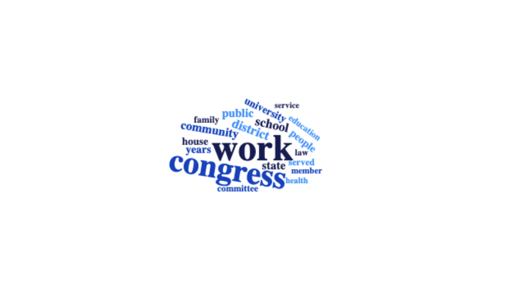
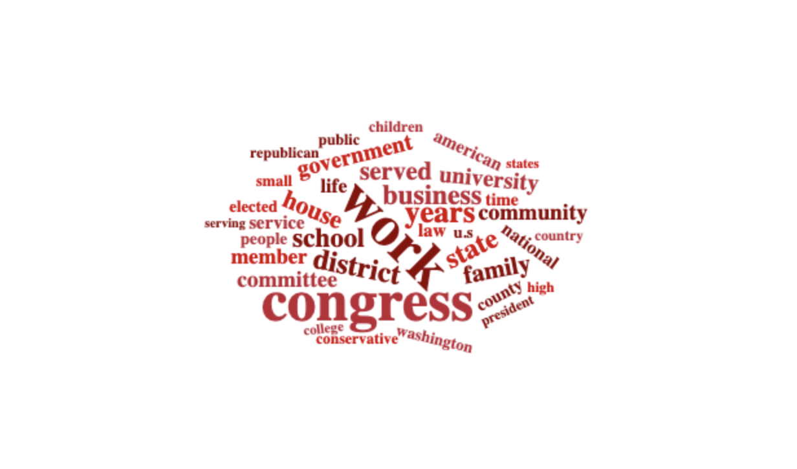
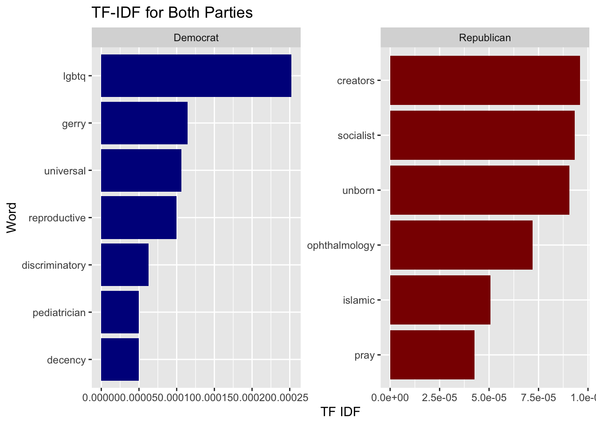
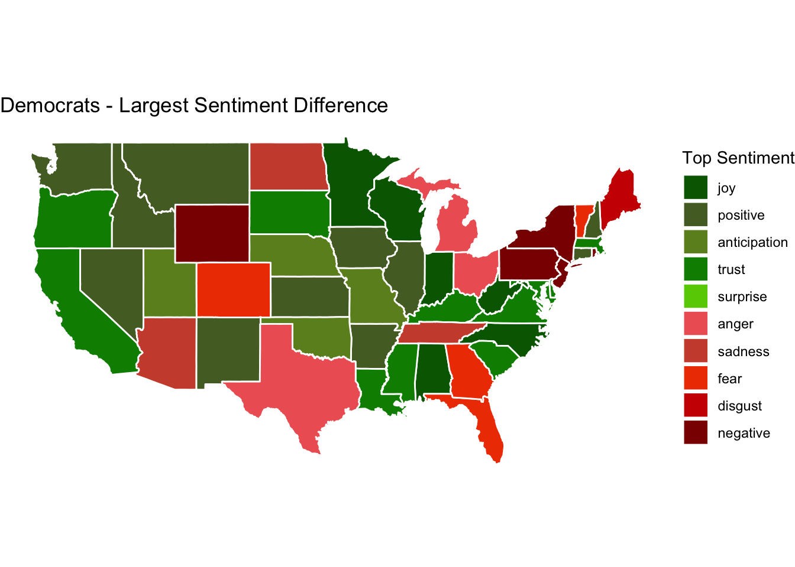
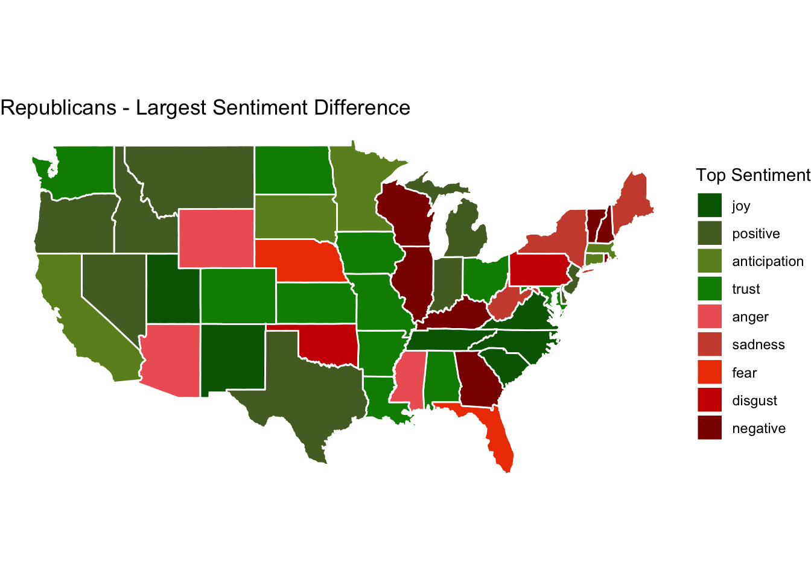

Introduction
As the political polarization in the United States escalates, as it has in recent years, how do candidates decide to portray themselves? In this project, rather than examining the nature of candidates’ attacks on another side’s politics, I looked into the words congressional candidates use to describe themselves. I believe that turning policy focus in towards the candidates themselves will help in understanding some of the fundamental differences that lead to polarization, while also uncovering paths to common ground.
Pulling data from a Harvard database, I analyzed candidates’ biographical narratives, as detailed on their campaign websites. The database includes 5,114 biographies for U.S. Congressional candidates from 2018-2022, but I focused specifically on candidates that advanced through the primary and into the general election, which ended up being 2,348 candidates. The most commonly appearing words for Democrats and Republican candidates for Congress are shown below, in the blue and red word clouds, respectively.
Word Cloud of Democratic Biographies
The biographies of Democratic candidates tended to focus on words related to the public good. Words like ‘public’, ‘district’, ‘served’, ‘health’, ‘community’, and ‘service’ demonstrate a messaging strategy of commitment to the local public interests. While Democrats focused in on a community-oriented brand of politics, Republicans had a slight shift in tone.
Word Cloud of Republican Biographies

The biographies of Republican candidates echoed some of the same interests as Democrats, but also included private interests on a broader scale. The emphasis of words like ‘business’, ‘law’, ‘national’, and ‘American’ demonstrate values that expand beyond community impact, and into a federal, private realm.
Once I understood some high-level values that go into each party’s messages, I turned my attention specifically to what sets the parties apart.
TF-IDF Statistic

The tf-idf statistic describes how important unique terms are, between different dataframes. The bar chart above describes the most commonly used used words used by Democrats and not Republicans, and vice versa.
Clearly, from 2018-2022, Democratic candidates focused in on issues of lgbtq rights. Similarly, many words associated with Democratic platforms were used, including ‘gerry’ (most likely used in the context of opposition to gerrymandering), ‘universal’ (probably used in the context of social welfare programs), and ‘reproductive’ (likely used for describing support for the pro-choice movement).
Republicans ran on the opposite site of the abortion issue, using words like ‘unborn’ and ‘creators’. The word ‘creators’ could also be viewed in a religious context, which would make sense alongside other highly scored words with religious sentiments, like ‘pray’ and ‘Islamic’. I assumed that Republicans used the word ‘socialist’ with the intent of politically attacking Democratic policies.
With a greater understanding of the differences between Democratic and Republican messaging in biographies, I turned my attention to the impacts of these words across the United States.
Democratic Map of Sentiment Differences

In my attempt to understand the relationship between location and messaging across the country, I used NRC sentiments to focus specifically on ten sentiments: joy, positive, anticipation, trust, surprise, anger, sadness, fear, disgust, and negative. Using the average proportion of each of these sentiments, I calculated the largest difference in sentiment for each state to determine what the messaging strategy is in different areas of the country. For Democratic candidates, most of the states had a uniquely positive highest sentiment difference (denoted with a green color). A few states had a more negative sentiment, particularly in New England.
Republican Map of Sentiment Differences

For Republicans, many of the same trends emerge. A majority of the states in the heartland and the west tend to have more positive top sentiment differences, while some states along the east coast, particularly New England, have stronger negative sentiments.
Conclusion
Across the board, understanding how politicians communicate is critical to understanding polarization in the United States. In a country where candidates dominate the headlines through an ability to yell the loudest, it is important to dig deeper and understand how politicians describe themselves. Only then can we see their true colors.